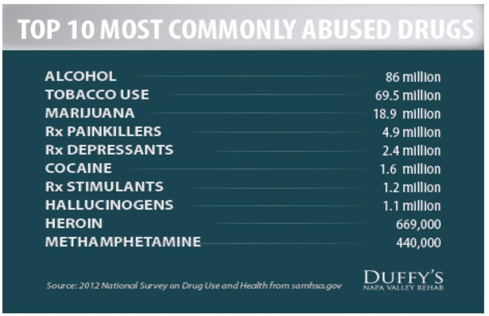

Environment, Health, and Substance Abuse
Environment and Health
Goal: Understand the role of environment in our health
Specific objectives:
- Describe environmental factors that affect our health
- Describe the relationship of man with the environment
Environment - is anything that externally surrounds a man. This is where man lives. The World Health Organization (WHO) defines environment, as it relates to health, as "all the physical, chemical, and biological factors external to a person, and all the related behaviors."
Culture - Culture refers to the cumulative deposit of knowledge, experience, beliefs, values, attitudes, meanings, hierarchies, religion, notions of time, roles, spatial relations, concepts of the universe, and material objects and possessions acquired by a group of people in the course of generations through individual and group striving.
Importance of environmental health
The goal of environmental health is to promote health for all through a healthy environment. It consists of preventing or controlling disease, injury, and disability related to the interactions between people and their environment. Poor environmental quality has its greatest impact on people whose health status is already at risk.
Environmental health factors (risks) affecting our health
- Air pollution - for example, smog, wood smoke and mould
- Water quality - for example, grey water, tank water, fluoridation and drought.
- Food quality and safety - for example, contamination and nutrition.
- Chemicals - for example, pesticides, farm chemicals.
- Metals - for example, exposure to lead, mercury
- Diseases from animals and insects (vector borne) - for example, dengue fever, virus, malaria.
- Infectious diseases - for example, viral infections like swine flu.
- Natural hazards - for example, solar radiation and extreme weather events.
- Man-made structures - for example, exposure to asbestos or electromagnetic radiation sources like mobile phones.
- Occupational health - for example, safety issues relating to the workplace such as noise pollution and hazardous waste.
- Climate change - for example, higher sea levels, increased soil salinity and increased temperatures.
- Housing conditions
How Culture Influences Health - Key points
The influence of culture on health is vast:
- It affects perceptions of health, illness and death,
- Beliefs about causes of disease
- Approaches to health promotion
- How illness and pain are experienced and expressed, where patients seek help
- The types of treatment patients prefer.
Drugs and Substance Abuse
Goal: Understand common drugs abused and ways of controlling drug abuse
Specific objectives:
- Discuss commonly abused drugs and its effects in our health
- Gain skills and knowledge on behavior change communication
Drug abuse - is the excessive use of a substance, especially alcohol or a drug. This is a compulsive, excessive, and self-damaging use of habit forming drugs or substances, leading to addiction or dependence, serious physiological injury (such as damage to kidneys, liver, heart) and/or psychological harm (such as dysfunctional behavior patterns, hallucinations, memory loss), or death. Also called substance abuse.
Classifications of Drugs
Drugs may be categorized or classified according to certain shared symptomatology or effects.
- Central Nervous System (CNS) Depressants - Slow down the operations of the brain and the body. Examples include alcohol, barbiturates, anti-anxiety tranquilizers.
- CNS Stimulants - Accelerate the heart rate and elevate the blood pressure. Examples include Cocaine, "Crack", Amphetamines and Methamphetamine ("Crank").
- Hallucinogens - Cause the user to perceive things differently than they actually are. Examples include LSD, Peyote, Psilocybin and MDMA (Ecstasy).
- Dissociative Anesthetics - Inhibit pain by cutting off or dissociating the brain's perception of the pain. PCP is an example.
- Narcotic Analgesics - Relieves pain, induces euphoria and creates mood changes. Examples include Opium, Codeine, Heroin, Morphine, Methadone.
- Inhalants - A wide variety of breathable substances that produce mind-altering results. Examples include Toluene, plastic cement, paint, gasoline.
- Cannabis - The scientific name for marijuana. The active ingredient is delta-9 tetrahydrocannabinol.
Illnesses associated with drug abuse
Drug abuse is associated with a wide range of illnesses, including:
- HIV / AIDS
- Depression
- Erectile dysfunction
- Schizophrenia
- Stroke
- Hepatitis B & C infection
- Cancer
- Domestic violence
Behavior Change Communication (BCC)
Behavior change communication (BCC) is an interactive process of any intervention with individuals, communities to develop communication strategies to promote positive behaviors which are appropriate to their settings.
Stages of change:
- Awareness
- Accept responsibility
- Perception of options
- Evaluate options
- Making choices
- Experiment behavious
- Habitual behavior